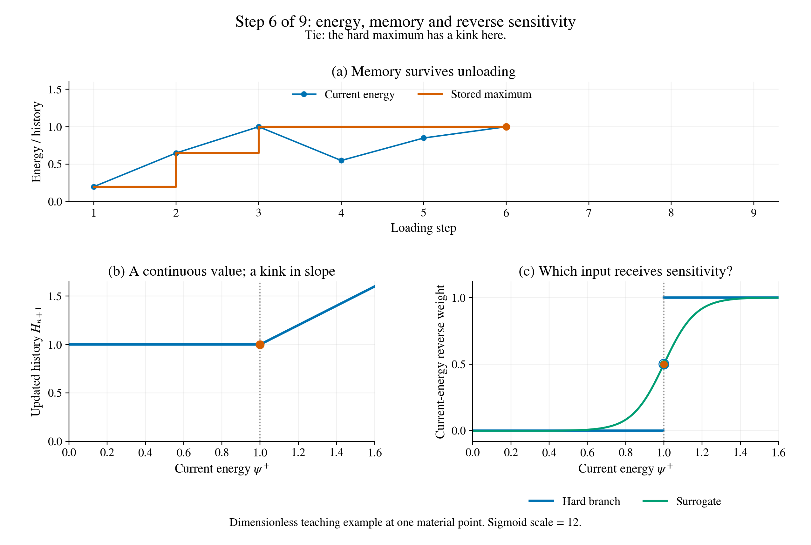

Why a fracture solver needs a memory-aware derivative¶
A diffuse crack can still contain a sharp mathematical decision. At each material point, the solver asks: is the current crack-driving energy larger than anything this point has experienced before? This short lesson follows that decision through loading, unloading and backpropagation.
Explore the switch beside a real crack¶
Change the previous maximum and current energy, then compare the hard branch with the sigmoid reverse rule. Beside that calculation, scrub through the recorded fracture sequence and select a point to inspect its damage history. The default view shows a dark crack in a light plate; the colour view uses the same complete damage field.
Open the full interactive panel
Download the self-contained interactive panel.
The controls run in the browser, without a notebook kernel or installation.
The two panes answer different questions: the left is a dimensionless history example, while the right contains retained PhAST damage fields. Matching energy/history snapshots were not saved, so the panel does not infer an energy history from the crack or claim that its sliders rerun the fracture solver.
The plate sequence contains 12 recorded frames on the full 40 mm square specimen (5,149 nodes and 9,990 triangular elements). The dark band is the computed phase-field crack: its finite width comes from the diffuse damage representation. The initial notch extends from the left edge. A particle boundary can be displayed to relate the subsequent deflection to the inclusion. Both renderings preserve the complete damage range, \(0\leq d\leq1\).
The retained mesh and damage arrays,
export receipt, and
Matplotlib exporter accompany the panel.
Four frames agree exactly with the previously retained inverse target data.
The browser’s compact damage arrays introduce a maximum rounding difference
below \(3\times10^{-8}\); the downloadable arrays preserve the original precision.
Original animated explanation
Press play. Blue is the current tensile energy; orange is its remembered maximum. On unloading, the blue curve falls while the orange history stays. The lower panels show the history update and its reverse weight at that step.
{kind=link}

Figure 6 A dimensionless example at one material point. The orange marker is the current state; the green marker is its surrogate reverse weight. The open blue marker at a tie denotes the half-weight convention. It does not imply a unique classical derivative there.¶
Play or download the 18-second animation.
Each frame is one history update; playback is slowed for reading.
The open blue point marks the half-weight convention at equality; the green
curve shows the surrogate reverse weight. Energy values are dimensionless.
1. Remember the largest energy¶
Here \(H_n\) stores the previous maximum and \(\psi^+\) is the current tensile driving energy. The maximum is continuous, with a kink at equality. Its current-energy partial is zero below the old maximum and one above it. At the tie, a classical partial derivative is generally undefined.
2. Carry the memory backwards¶
Sensitivity means how much a quantity changes when an input changes slightly. For any inverse parameter \(\theta\), such as a particle coordinate,
For the hard branch rule, \((w_H,w_\psi)=(1,0)\) during unloading and \((0,1)\) at a new maximum. Unloading does not erase sensitivity: the derivative can still pass through the earlier history. At equality, the implementation can assign half to each input as a convention.
3. What our custom PhAST rule does¶
PhAST offers several history choices. Its hard-forward, sigmoid-backward option keeps the maximum in the forward calculation and uses
in reverse. The operator saves its inputs and applies these weights to the incoming sensitivity. This is a compact vector–Jacobian product; it does not require storing a full Jacobian matrix. The research option uses a fixed reference energy \(E_{\rm ref}\); a dimensional-scale variant also exists. The animation uses dimensionless energies and \(k=12\) to make the transition visible, rather than a production fracture setting.
Near a switch, this is a surrogate derivative of the hard forward map. A separate smooth-forward option changes the history value itself. Neither choice guarantees a smooth derivative across competing crack paths. Damage bounds and equilibrium solves also need their own consistent backward rules. Our detailed chapter explains those dependencies and tests.
Take away: phase-field regularisation spreads a crack in space. History differentiation carries its memory through time. These solve different parts of the problem.
Read the complete source-grounded explanation, or inspect
the Matplotlib source,
tested teaching primitive,
plotted arrays, and
HPC checks and receipt.
The receipt retains the example where a hard-map finite difference is zero
and the surrogate weight is approximately \(0.475\).